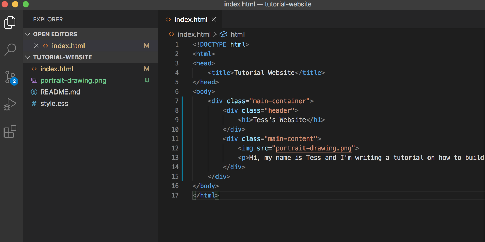

Creating a website together
Contents of Unit 13
What will I learn?
- Understand the uses and features of website
- Presenting information
- Storing information
- Browsing and searching for a information
- E-commerce
- Downloading information
- Improving productivity
- Online forums
- Communicating with people
What skills will I obtain?
- Produce a proper website using html and CSS.
- Gain valuable team working and communication skills by taking part in the events
- Learn more about how to create a website from a w3schools and youtube.
- Develop your confidence in creating website yourself
How will I be assessed?
- You will be need to create a website using html
and CSS which is Cascading Style Sheet and you can
do this learning through w3schools and youtube as your
choice and the convenient.